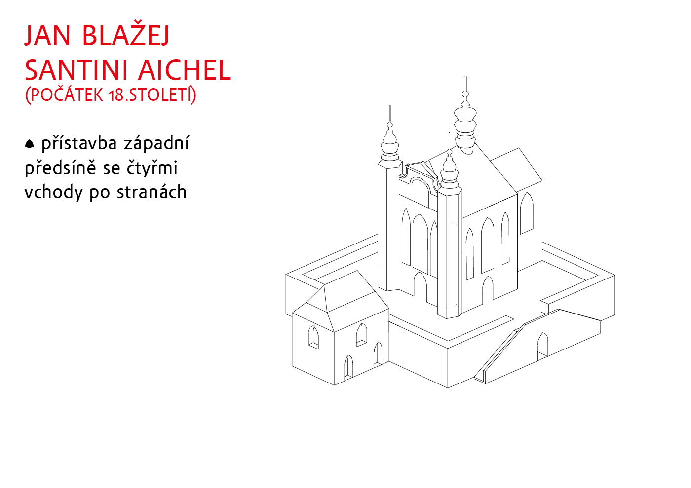
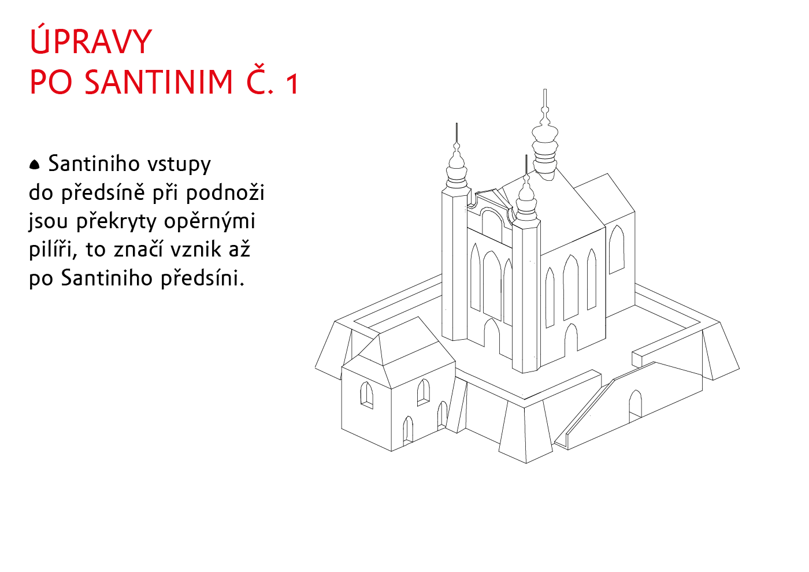
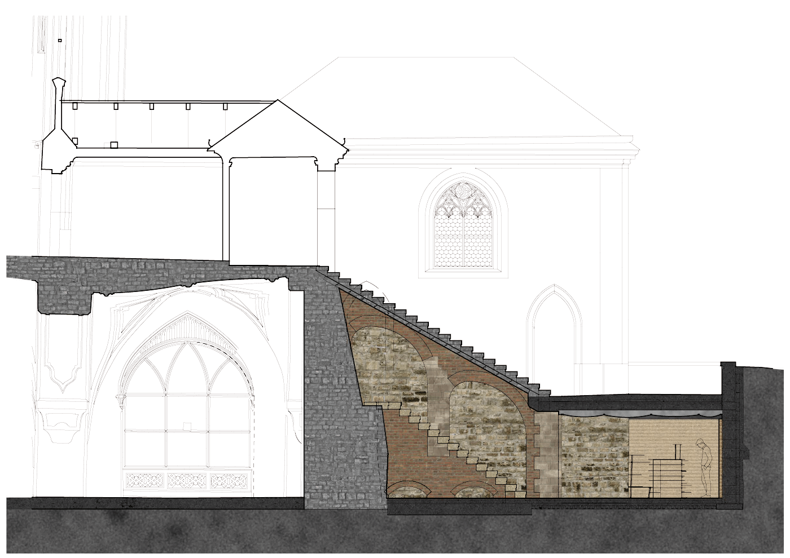
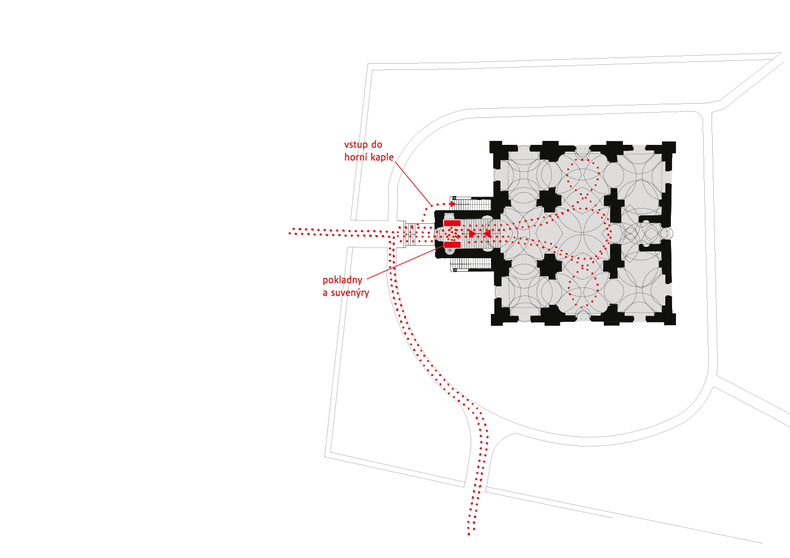
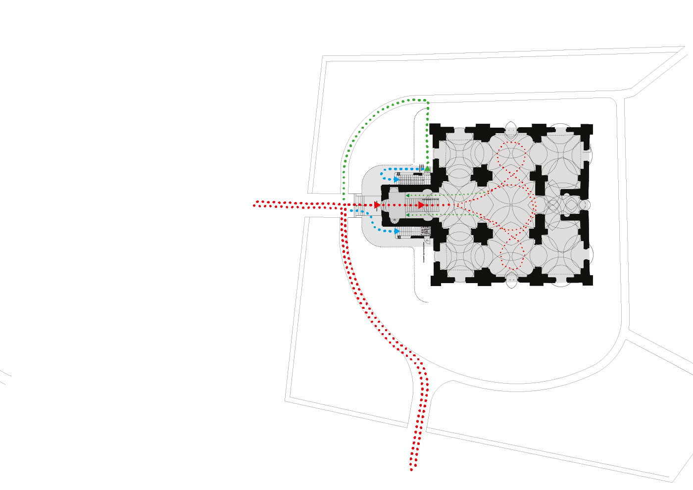
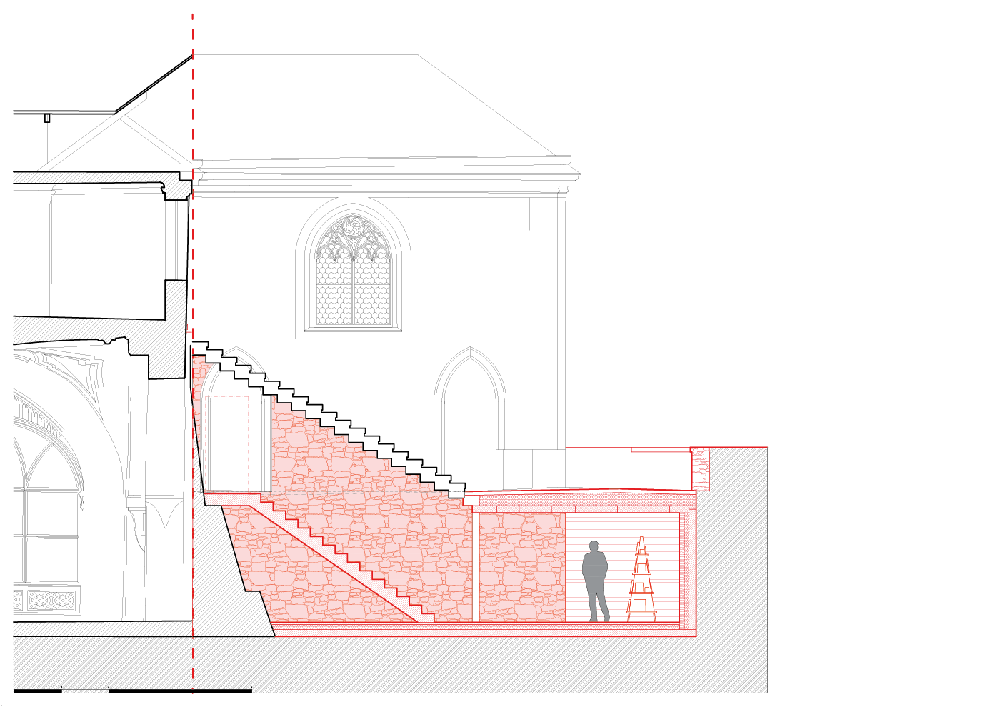

<!DOCTYPE html>
<html lang="cs">
  <head>
    <meta charset="UTF-8"/>
    <meta name="viewport" content="initial-scale=1, user-scalable=1"/>
    <title>
    </title>
    <link rel="stylesheet" href="css/styles.css"/>
    <link rel="stylesheet" href="slick/slick.css"/>
    <link rel="stylesheet" href="slick/slick-theme.css"/>
  </head>
  <body class="body_single pcolor" id="body" style="background-color:#EB8A7D"></body>
  <body class="body_index">
    <script type="text/javascript" src="https://cdnjs.cloudflare.com/ajax/libs/jquery/3.4.1/jquery.min.js"></script>
    <script type="text/javascript" src="//code.jquery.com/jquery-migrate-1.2.1.min.js"></script>
    <script type="text/javascript" src="//cdn.jsdelivr.net/npm/slick-carousel@1.8.1/slick/slick.min.js"></script>
    <div class="wrap">
      <div class="menu">
        <div class="logo"><a href="index.html"></a></div>
        <nav class="nav_menu">
          <ul class="navbar-nav">
            <li class="nav-item"> <a class="nav-link" href="projects.html">projects</a></li>
            <li class="nav-item"> <a class="nav-link" href="archive.html">archive</a></li>
            <li class="nav-item"> <a class="nav-link" href="profile.html">profile</a></li>
            <li class="nav-item"> <a class="nav-link" href="contacts.html">contacts</a></li>
          </ul>
        </nav>
        <nav class="langer">
          <ul class="navbar-nav lang">
            <li class="nav-item"><a class="nav-link active" href="index.html">CZ</a></li>
            <li class="nav-item"><a class="nav-link" href="index.html">EN</a></li>
          </ul>
        </nav>
      </div><br/>
            <div class="footer">
              <div class="footer-left">
                <div class="pag-info"></div><br/><span><a href="single2.html">Prev project</a></span>
              </div>
              <div class="project-text-modal">Rekonstrukce a přístavba kaple Všech Svatých s kostnicí<br/><span></span><br/><a class="open-button active" href="#" onclick="return false">View text</a></div>
              <div class="footer-right">
                <div class="pag-info2"> </div><br/><span><a href="single4.html">Next project</a></span>
              </div>
            </div>
            <div class="grid" id="content">
              <ul class="grid-ul">
                <li>
                  <div class="carousel">
                  </div>
                </li>
                <li>
                  <div class="carousel2">
                    <div></div>
                    <div></div>
                    <div></div>
                    <div></div>
                    <div></div>
                    <div></div>
                    <div></div>
                    <div></div>
                    <div></div>
                    <div></div>
                    <div></div>
                  </div>
                </li>
              </ul>
            </div>
            <div class="modal-wrap closed" id="modal">
              <div class="modal-window">
                <div class="modal-close" id="close-button"><a class="nav-link" href="#" onclick="return false"></a></div>
                <div class="modal-content"> 
                  <p>Rekonstrukce a přístavba kaple Všech Svatých s kostnicí<br><br></p>
                  <p></p>
                  <div class="credentials">
                    <div class="cred"><span>Lokace </span></div>
                    <div class="cred"><span>Kutná Hora – Sedlec, Česká republika</span></div>
                  </div>
                  <div class="credentials">
                    <div class="cred"><span>Klient </span></div>
                    <div class="cred"><span>Římskokatolická farnost Kutná Hora – Sedlec</span></div>
                  </div>
                  <div class="credentials">
                    <div class="cred"><span>Náklady </span></div>
                    <div class="cred"><span>1 500 000</span></div>
                  </div>
                  <div class="credentials">
                    <div class="cred"><span>Rok </span></div>
                    <div class="cred"><span></span></div>
                  </div>
                  <div class="credentials">
                    <div class="cred"><span>Typologie </span></div>
                    <div class="cred"><span>sakrální stavby <br></span>
                    </div>
                  </div>
                </div>
              </div>
            </div>
            <!-- The Modal-->
            <div class="pmodal" id="myModal">
              <!-- Modal content-->
              <div class="pmodal-content"><span class="pclose"></span>
                <div class="slider-for">
                </div>
              </div>
            </div>
      <script>
        		var content = document.querySelector("#content");
        		var popiska = document.querySelector(".open-button");
        		var modal = document.querySelector("#modal");
        		var closeButton = document.querySelector("#close-button");
        		var openButton = document.querySelector(".open-button");
        
        
        		openButton.addEventListener("click", function() {
        			content.classList.toggle("closed");
        			//- popiska.classList.toggle("closed");
        			modal.classList.toggle("closed");
        			if (openButton.innerHTML === "View text") {
        			    openButton.innerHTML = "Close text";
        			  } else {
        			    openButton.innerHTML = "View text";
        			  }
        		});
        
        		closeButton.addEventListener("click", function() {
        			modal.classList.toggle("closed");
        			content.classList.toggle("closed");
        			//- popiska.classList.toggle("closed");
        			if (popiska.innerHTML === "View text") {
        			    popiska.innerHTML = "Close text";
        			  } else {
        			    popiska.innerHTML = "View text";
        			  }
        		});
        
        		//- $('.lazy').slick({
        		//-   lazyLoad: 'ondemand',
        		//-   slidesToShow: 2,
        		//-   slidesToScroll: 2
        		//- });
        
        
        		
        		$(document).ready(function(){
        			var $status = $('.pag-info');
        			var $status2 = $('.pag-info2');
        			var $slickElement = $('.carousel');
        			var $slickElement2 = $('.carousel2');
        
        			$slickElement.on('init reInit afterChange', function (event, slick, currentSlide, nextSlide) {
        			  //currentSlide is undefined on init -- set it to 0 in this case (currentSlide is 0 based)
        				var i = (currentSlide ? currentSlide : 0) + 1;
        				$status.text(i + '/' + slick.slideCount);
        			});
        
        			$slickElement2.on('init reInit afterChange', function (event, slick, currentSlide, nextSlide) {
        				//currentSlide is undefined on init -- set it to 0 in this case (currentSlide is 0 based)
        				var i = (currentSlide ? currentSlide : 0) + 1;
        				$status2.text(i + '/' + slick.slideCount);
        			});
        
        
        			$('.slider-for').slick({
        				arrows: true,
        				fade: false,
        				asNavFor: '.carousel',
        				variableWidth: false,
        				focusOnSelect: false,
        				accessibility: true,
        				speed: 300,
        				initialSlide: 0
        
        			});
        
        			$('.carousel').slick({
        				arrows: true,
        				asNavFor: '.slider-for',
        				focusOnSelect: false,
        				accessibility: true,
        				speed: 300,
        				initialSlide: 0
        			});
        
        			$('.carousel2').slick({
        				focusOnSelect: false,
        				accessibility: true,
        				speed: 300,
        				initialSlide: 0
        			});
        
        		});
        
        var pmodal = document.getElementById("myModal");
        var btn = document.getElementById("#myBtn");
        var span = document.getElementsByClassName("pclose")[0];
        var myslider = document.getElementsByClassName(".slider-for");
        
        $(document).keyup(function(e) {
          if (e.keyCode == 27) { 
          	pmodal.style.display = "none";
           }   // esc
        });
        
        function mymodal() {
        	  pmodal.style.display = "block";
        	  $('.slider-for').slick('refresh');
        }
        span.onclick = function() {
          pmodal.style.display = "none";
        }
        window.onclick = function(event) {
          if (event.target == pmodal) {
            pmodal.style.display = "none";
          }
        }
      </script>
    </div>
  </body>
</html>